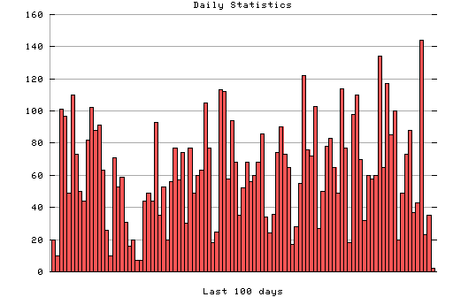

HTTP Server Daily Statistics
Covers: 09/27/95 to 03/11/96 (167 days).
All dates are in local time.
09/27/95 (Wed): 9 : # 09/28/95 (Thu): 85 : ######### 09/29/95 (Fri): 141 : ############## 09/30/95 (Sat): 13 : # 10/01/95 (Sun): 45 : ##### 10/02/95 (Mon): 42 : #### 10/03/95 (Tue): 29 : ### 10/04/95 (Wed): 59 : ###### 10/05/95 (Thu): 3 : 10/06/95 (Fri): 64 : ###### 10/07/95 (Sat): 13 : # 10/08/95 (Sun): 85 : ######### 10/09/95 (Mon): 73 : ####### 10/10/95 (Tue): 95 : ########## 10/11/95 (Wed): 155 : ################ 10/12/95 (Thu): 118 : ############ 10/13/95 (Fri): 62 : ###### 10/14/95 (Sat): 76 : ######## 10/15/95 (Sun): 19 : ## 10/16/95 (Mon): 47 : ##### 10/17/95 (Tue): 89 : ######### 10/18/95 (Wed): 105 : ########### 10/19/95 (Thu): 95 : ########## 10/20/95 (Fri): 82 : ######## 10/21/95 (Sat): 55 : ###### 10/22/95 (Sun): 28 : ### 10/23/95 (Mon): 110 : ########### 10/24/95 (Tue): 64 : ###### 10/25/95 (Wed): 123 : ############ 10/26/95 (Thu): 55 : ###### 10/27/95 (Fri): 63 : ###### 10/28/95 (Sat): 28 : ### 10/29/95 (Sun): 52 : ##### 10/30/95 (Mon): 216 : ###################### 10/31/95 (Tue): 179 : ################## 11/02/95 (Thu): 71 : ####### 11/03/95 (Fri): 142 : ############## 11/04/95 (Sat): 102 : ########## 11/05/95 (Sun): 79 : ######## 11/06/95 (Mon): 201 : #################### 11/07/95 (Tue): 227 : ####################### 11/08/95 (Wed): 132 : ############# 11/09/95 (Thu): 83 : ######## 11/10/95 (Fri): 76 : ######## 11/11/95 (Sat): 75 : ######## 11/12/95 (Sun): 56 : ###### 11/13/95 (Mon): 87 : ######### 11/14/95 (Tue): 105 : ########### 11/15/95 (Wed): 85 : ######### 11/16/95 (Thu): 58 : ###### 11/17/95 (Fri): 49 : ##### 11/18/95 (Sat): 133 : ############# 11/19/95 (Sun): 79 : ######## 11/20/95 (Mon): 74 : ####### 11/21/95 (Tue): 128 : ############# 11/22/95 (Wed): 85 : ######### 11/23/95 (Thu): 65 : ####### 11/24/95 (Fri): 85 : ######### 11/25/95 (Sat): 44 : #### 11/26/95 (Sun): 26 : ### 11/27/95 (Mon): 82 : ######## 11/28/95 (Tue): 120 : ############ 11/29/95 (Wed): 37 : #### 11/30/95 (Thu): 37 : #### 12/01/95 (Fri): 43 : #### 12/02/95 (Sat): 20 : ## 12/03/95 (Sun): 10 : # 12/04/95 (Mon): 101 : ########## 12/05/95 (Tue): 97 : ########## 12/06/95 (Wed): 49 : ##### 12/07/95 (Thu): 110 : ########### 12/08/95 (Fri): 73 : ####### 12/09/95 (Sat): 50 : ##### 12/10/95 (Sun): 44 : #### 12/11/95 (Mon): 82 : ######## 12/12/95 (Tue): 102 : ########## 12/13/95 (Wed): 88 : ######### 12/14/95 (Thu): 91 : ######### 12/15/95 (Fri): 63 : ###### 12/16/95 (Sat): 26 : ### 12/17/95 (Sun): 10 : # 12/18/95 (Mon): 71 : ####### 12/19/95 (Tue): 53 : ##### 12/20/95 (Wed): 59 : ###### 12/21/95 (Thu): 31 : ### 12/22/95 (Fri): 16 : ## 12/23/95 (Sat): 20 : ## 12/24/95 (Sun): 7 : # 12/25/95 (Mon): 7 : # 12/26/95 (Tue): 44 : #### 12/27/95 (Wed): 49 : ##### 12/28/95 (Thu): 44 : #### 12/29/95 (Fri): 93 : ######### 12/30/95 (Sat): 35 : #### 12/31/95 (Sun): 53 : ##### 01/01/96 (Mon): 20 : ## 01/02/96 (Tue): 56 : ###### 01/03/96 (Wed): 77 : ######## 01/04/96 (Thu): 57 : ###### 01/05/96 (Fri): 74 : ####### 01/06/96 (Sat): 30 : ### 01/07/96 (Sun): 77 : ######## 01/08/96 (Mon): 49 : ##### 01/09/96 (Tue): 60 : ###### 01/10/96 (Wed): 63 : ###### 01/11/96 (Thu): 105 : ########### 01/12/96 (Fri): 77 : ######## 01/13/96 (Sat): 18 : ## 01/14/96 (Sun): 25 : ### 01/15/96 (Mon): 113 : ########### 01/16/96 (Tue): 112 : ########### 01/17/96 (Wed): 58 : ###### 01/18/96 (Thu): 94 : ######### 01/19/96 (Fri): 68 : ####### 01/20/96 (Sat): 35 : #### 01/21/96 (Sun): 52 : ##### 01/22/96 (Mon): 68 : ####### 01/23/96 (Tue): 56 : ###### 01/24/96 (Wed): 60 : ###### 01/25/96 (Thu): 68 : ####### 01/26/96 (Fri): 86 : ######### 01/27/96 (Sat): 34 : ### 01/28/96 (Sun): 24 : ## 01/29/96 (Mon): 36 : #### 01/30/96 (Tue): 74 : ####### 01/31/96 (Wed): 90 : ######### 02/01/96 (Thu): 73 : ####### 02/02/96 (Fri): 65 : ####### 02/03/96 (Sat): 17 : ## 02/04/96 (Sun): 28 : ### 02/05/96 (Mon): 55 : ###### 02/06/96 (Tue): 122 : ############ 02/07/96 (Wed): 76 : ######## 02/08/96 (Thu): 72 : ####### 02/09/96 (Fri): 103 : ########## 02/10/96 (Sat): 27 : ### 02/11/96 (Sun): 50 : ##### 02/12/96 (Mon): 78 : ######## 02/13/96 (Tue): 83 : ######## 02/14/96 (Wed): 65 : ####### 02/15/96 (Thu): 49 : ##### 02/16/96 (Fri): 114 : ########### 02/17/96 (Sat): 77 : ######## 02/18/96 (Sun): 18 : ## 02/19/96 (Mon): 98 : ########## 02/20/96 (Tue): 110 : ########### 02/21/96 (Wed): 70 : ####### 02/22/96 (Thu): 32 : ### 02/23/96 (Fri): 60 : ###### 02/24/96 (Sat): 58 : ###### 02/25/96 (Sun): 60 : ###### 02/26/96 (Mon): 134 : ############# 02/27/96 (Tue): 65 : ####### 02/28/96 (Wed): 117 : ############ 02/29/96 (Thu): 85 : ######### 03/01/96 (Fri): 100 : ########## 03/02/96 (Sat): 20 : ## 03/03/96 (Sun): 49 : ##### 03/04/96 (Mon): 73 : ####### 03/05/96 (Tue): 88 : ######### 03/06/96 (Wed): 37 : #### 03/07/96 (Thu): 43 : #### 03/08/96 (Fri): 144 : ############## 03/09/96 (Sat): 23 : ## 03/10/96 (Sun): 35 : #### 03/11/96 (Mon): 2 :

Statistics generated at Mon Mar 11 03:12:22 MET 1996, (C) Schibsted Nett AS, 1995.